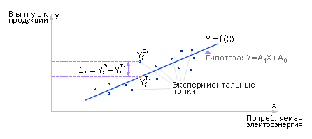
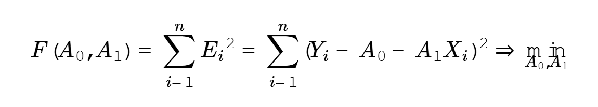
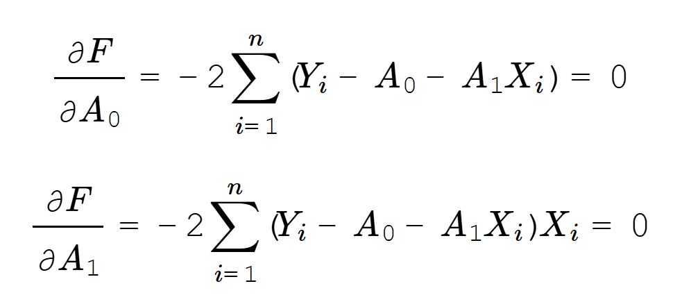
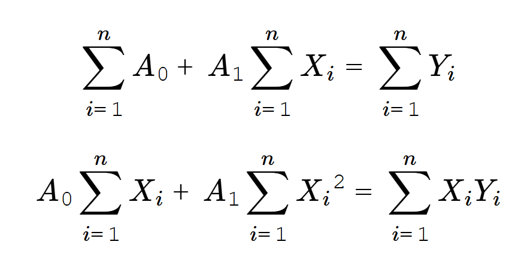
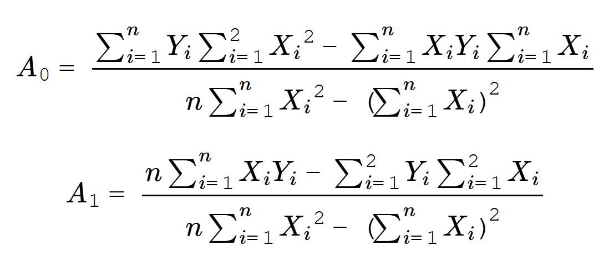
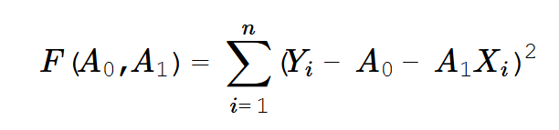
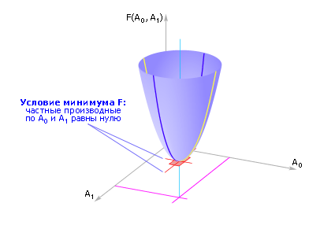
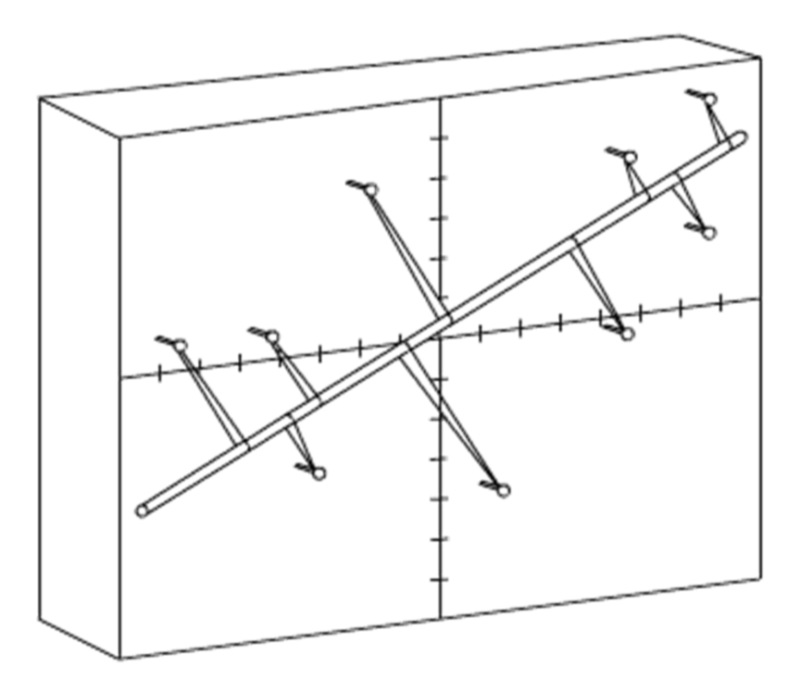

Как уже было сказано интеллектуальная деятельность связана с умением на основании нескольких фактов выявить по ним общую закономерность. Ясно, что дерево растет точно в соответствии со множеством законов, завод работает, подчиняясь своим законам. Однако все эти законы скрыты от наших глаз. Наша задача их выявить, записать в явном виде. Тогда мы могли бы, используя записи законов, предсказать будущее поведение системы и даже управлять ею, направляя ее в нужном нам направлении.
Предположим, что мы поставили 10 экспериментов, чтобы определить, если ли связь между причиной Х и следствием Y. Их результаты можно отразить
на графике, нарисовав в осях X, Y 10 точек с координатами (xi, yi) каждая.
Рассматривая точки в совокупности, можно выдвинуть гипотезу о том, что их объединяет. Предположим, что в нашем примере имеет место линейная зависимость
между X и Y: Y = A1 * X + A0. Такая гипотеза на графике выглядит как прямая линия с наклоном, который задается параметром A1, и смещением,
которое задается параметром A0. (рис. 5.1.)

Рисунок 5.1. - График гипотезы Y = A1 * X + A0
Таких прямых с разными значениями параметров A0 и A1 можно провести бесконечно много. Поэтому наша задача найти и провести одну единственную прямую линию, которая будет одновременно ближе всего сразу ко всем экспериментальным точкам. Это значит, что надо измерить расстояние Ri = (yi – (A0 + A1 * xi))2 от экспериментальной точки (xi, yi) до соответствующей ей точки на прямой с координатами (xi, A0 + A1 * xi), сложить все эти расстояния F = ∑Ri2 и потребовать, чтобы сумма ошибок F была наименьшей: F→min. Уточним, жертвовать мы можем при этом значениями A0 и A1. То есть их значения мы можем менять произвольно по собственному желанию. Поэтому, запишем, что суммарная ошибка F зависит от A0 и A1 и должна стремиться к минимуму: F(A0, A1)→min. Данное замечание говорит о том, что F является функцией от A0 и A1 и нам требуется найти экстремум (минимум) этой функции.
Обратите внимание, что все расстояния Ri между положениями i-той экспериментальной точки и соответствующей ей теоретической точки, лежащей вертикально над или под ней по Y, перед сложением в сумму мы возвели в квадрат. Это сделано для того, чтобы при сложении положительных и отрицательных разностей (yi - (A0 + A1 * xi)), когда экспериментальные точки располагаются как выше, так и ниже теоретической прямой, их сумма F при наличии расхождений положений точек не показала, что их якобы нет.Такой метод логично назвали методом наименьших квадратов. Чем дальше значения A0 и A1 от значений A0*, A1* у наилучшей из возможных прямых y = A0* + A1* * x, тем больше значение F. И только при наилучших значениях А0* и A1* функция F достигает минимума. А это значит, что в точке (А0*,A1*) производные ∂F / ∂A0 = 0 и ∂F / ∂A1 = 0 одновременно. Применим условие экстремума к функции F, составив два уравнения с двумя неизвестными A0 и A1. При этом здесь надо иметь в виду, что беря производную по A0, следует считать, что остальные переменные A1, х, y - неизменны, константы. Беря производную по A1, следует считать, что константами являются A0, х, y.

Беря производные по A0 и по A1 и приравнивая их выражения нулю, имеем:

Упрощая, имеем:

Решая совместно два уравнения относительно неизвестных A0 и A1, имеем:

При определенной настойчивости этот же результат можно получить по-другому, по-школьному. Функция:

представляет собой параболоид (рис. 5.2.), то есть параболу относительно неизвестной переменной A0 и параболу относительно неизвестной переменной A1, проходящие во взаимно перпендикулярных плоскостях, так как A0 и A1 независимые друг от друга переменные. Ветви обеих парабол направлены вверх, так как при неудачных значениях A0 и A1 отклонение искомой прямой от экспериментальных точек только растет, а, значит, растет ошибка F. Известно, что вершина параболы a * A02 + b * A0 + c = 0 лежит в точке A0 = -b / (2 * a), вершина параболы p * A12 + k * A1 + m = 0 лежит в точке A1 = -k / (2 * p). Возведя выражение в скобках во вторую степень, разнеся знак суммы по отдельным слагаемым и раскрыв скобки, получим выражения для a, b, k, p. И соответственно те же выражения для A0 и A1, которые были приведены выше.

Рисунок 5.2. - График параболоида
Подставляя в полученные выражения значения десяти (n = 10) значений Xi и десяти значений Yi, получим наилучшие значения A0* и A1* и соответственно такое положение искомой прямой линии, при котором она будет подходить ко всем экспериментальным точкам на ближайшее суммарное расстояние F. Построенное уравнение с найденными коэффициентами называется регрессионной моделью. (табл. 5.1.)
Пример:
| Экспериментальные данные | Расчетные данные | Расхождение теории и эксперимента | |||||
|---|---|---|---|---|---|---|---|
| № точки | Xi | Yi | Xi2 | XiYi | YiT = A0+ A1* Xi | Ri = YiT - Yi | Ri2 |
| 1 | 1 | 0 | 1 | 0 | 0.21 | 0.21 | 0.04 |
| 2 | 3 | 2 | 9 | 6 | 2.51 | 0.51 | 0.26 |
| 3 | 3 | 4 | 9 | 12 | 2.51 | -1.49 | 2.22 |
| 4 | 4 | 4 | 16 | 16 | 3.66 | -0.34 | 0.12 |
| 5 | 6 | 5 | 36 | 30 | 5.96 | 0.96 | 0.92 |
| 6 | 7 | 6 | 49 | 42 | 7.11 | 1.11 | 1.23 |
| 7 | 8 | 9 | 64 | 72 | 8.26 | -0.74 | 0.55 |
| 8 | 9 | 11 | 81 | 99 | 9.41 | -1.59 | 2.531 |
| 9 | 12 | 10 | 144 | 120 | 12.86 | 2.86 | 8.18 |
| 10 | 15 | 18 | 225 | 270 | 16.31 | -1.69 | 2.86 |
| n=10 | S = 68 сумма Xi |
P = 69 сумма Yi |
M = 634 сумма Xi2 |
K = 667 сумма Xi*Yi |
Суммарная абсолютная ошибка между экспериментом и теорией F=18.91 - сумма Ri2 |
||
|
A0 = (P * M - S * K)/(n * M - S2) A1 = (N * K - S * P)/(n * M - S2) Y = A0 + A1 * X, Y = -0.94 + 1.15 * X |
Среднеквадратичное отклонение (относительная ошибка) σ = √ (F/(n - 2)) = 1.54 |
||||||
Теперь, зная общую зависимость, можно с пользой для себя спрогнозировать, чему будет равен Y при X = 20: Y = -0.94 + 1.15 * X = -0.94 + 1.15 * 20 = 22.06. А сделав обратное преобразование X = (Y + 0.94) / 1.15, найти как подстроить причину X, чтобы обеспечить значение результата Y = 3. Интересно, что прогноз на весьма отдалённые точки от рассматриваемых может оказаться весьма неточен. Так через 300 лет А. Эйнштейн поправил (дополнил) модель механики Ньютона, которая на небольших значениях скоростей ранее казалась линейной.
Задания
- Задайтесь самостоятельно двухмерными координатами десяти точек. Проведите расчет. Найдите и нарисуйте положение оптимальной для них прямой линии. Измерьте итоговую суммарную ошибку, а также относительную ошибку в расчете на одну точку.
- Определите, какой процент экспериментальных точек входит в коридор, образованный параллельными линиями, отстоящими от теоретической прямой вверх и вниз на расстоянии среднеквадратичного отклонения, сравните это число с нормой нормального распределения ошибки - 68%.
- Получите формулы расчета наилучших значений A0 и A1, отмеряя отклонение положения экспериментальной точки от теоретической по перпендикуляру к теоретической прямой. Поясните разницу полученных выражений.
- Загрузите упражнение с сайта. Расставьте экспериментальные точки в осях X, Y. Наблюдайте за положением оптимальной прямой при изменении положения экспериментальных точек.
- Проведите расчет коэффициентов A0, A1, A2 для случая, когда гипотеза принимает вид параболы: Y = A0 + A1 * X + A2 * X2. Задайтесь положением экспериментальных точек, нарисуйте результирующий график. Сравните значение ошибки с линейным одномерным случаем.
- Проведите расчет, если на Y влияет несколько входных переменных: Y = A0 + A1 * X + A2 * Z + A3 * W. Задайтесь положением экспериментальных точек, приведите результирующий график. Сравните значение ошибки с линейным одномерным случаем.
Обратите внимание, что удачное усложнение гипотезы приводит к уменьшению ошибки описания моделью данных эксперимента. Усложнение гипотезы за счет введения в рассмотрение дополнительных входных переменных предполагает появление в системе дополнительных элементов, понятий, сущностей. Усложнение гипотезы за счет введения нелинейностей означает, что в системе появляются дополнительные связи. То есть системы усложняются как за счет элементов, так и за счет связей. Чем более сложной является рассматриваемая система, тем более сложной будет модель для ее описания при заданном нормативном значении ошибки.
Замечание. Если мерять расстояние между экспериментальной и теоретической точкой не по вертикальной оси Y, как это принято в кинематике, а по перпендикуляру к теоретической прямой, то итоговые выражения будут несколько другими и будут указывать на положение оси вращения тела, образованного заданными точками, обладающего минимальным моментом вращения. Первое связано с тем, что в кинематике реальное положение тела Y в момент времени X должно как можно меньше отличаться от положения тела в этот же момент времени от гипотетического своего положения при движении по теоретической прямой. Во втором случае речь идет о положении точки в пространстве с координатами (x,y) и вычисляется ось с минимальным осевым моментом инерции при вращении.
В любом случае мы находим наилучшее в пределах выдвинутой нами гипотезы описание (закон) расположения заданных точек.
Физики заметили, что тоже действие производит сама природа, минимизируя энергию системы. Если взять доску, начертить на ней оси координат XY,
вбить гвозди в доску по координатам экспериментальных точек, надеть на них аптекарские резинки и продеть через все резинки линейку, то она примет
именно то положение, которое предсказывает расчет. (Рис. 5.3.)

Рисунок 5.3. - Доска с гвоздями